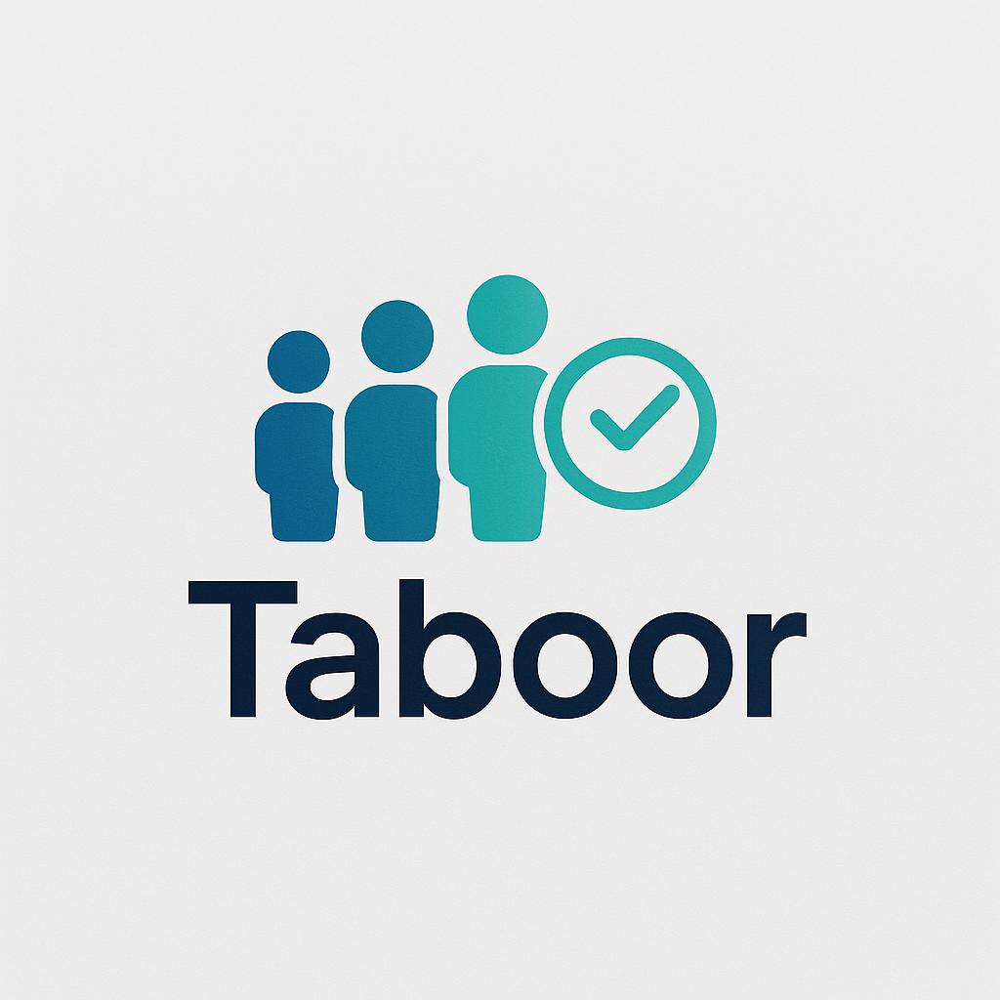

SOC fundamentals
Security monitoring concepts, threat detection, event investigation, and incident response.
Available for opportunities
I’m Abdulaziz Alodhayb, an IT graduate pursuing two connected paths: junior SOC analysis and dependable IT technical support.
01 — About
I’m building hands-on capability across security monitoring and technical support. My Security+ foundation covers threat detection, incident response, phishing analysis, and security events, while my support experience keeps me grounded in troubleshooting, device setup, documentation, and user care.
02 — Focus areas
Security monitoring concepts, threat detection, event investigation, and incident response.
TCP/IP, DNS, DHCP, HTTP/HTTPS, subnetting, and connectivity troubleshooting.
First-line troubleshooting, Windows setup, software, printers, devices, and user support.
Wireshark, Linux and Windows fundamentals, Git/GitHub, documentation, and structured problem-solving.
03 — Experience & education
Jun 2025 — Jul 2025
Internship
Delivered first-line support for employees, diagnosing workstation and hardware issues, installing and configuring computers, printers, and applications, and documenting resolutions to minimize downtime.
Sep 2020 — Jan 2026
Education
College of Computer · GPA 4.19 / 5.00
04 — Practical project
A team-built product that strengthened my systems, database, testing, and delivery foundation.

Full-stack systems project · Sep 2025 — Jan 2026
A JavaScript and SQLite queue management system that replaced manual waiting with a clear digital workflow.
05 — Credentials
Certification
Certificate
Google training
Google training
Google training
06 — Contact